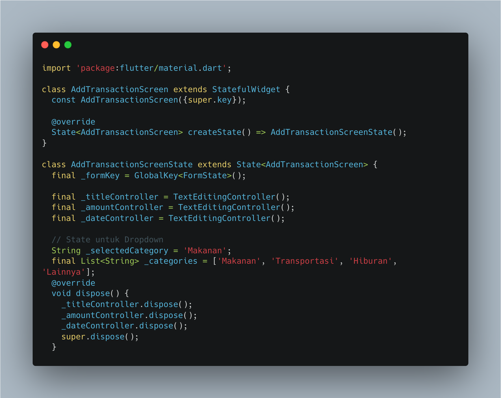
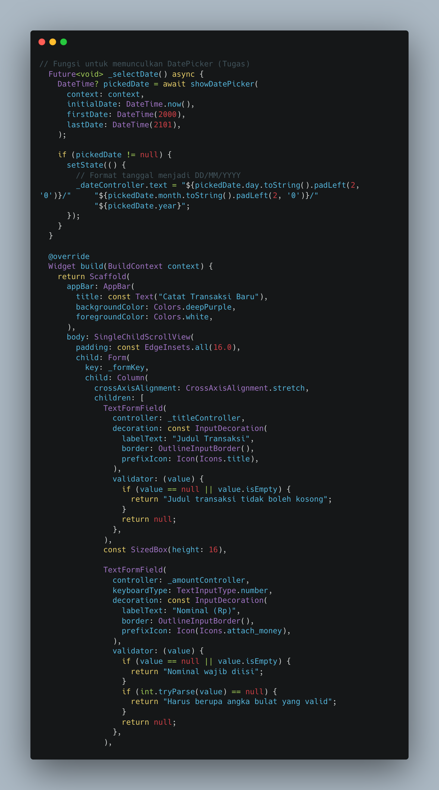
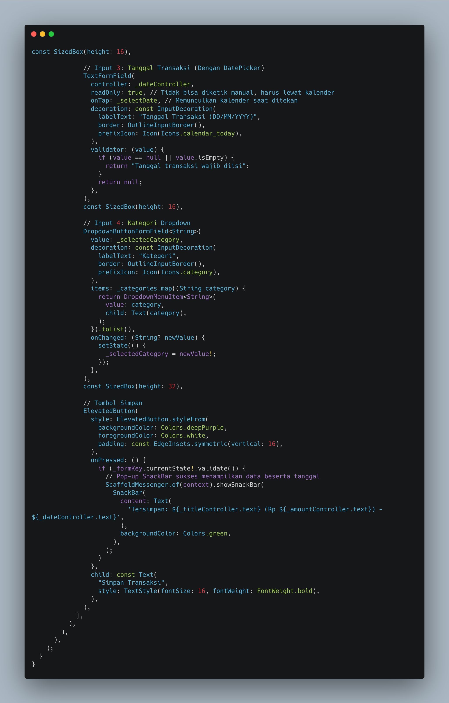
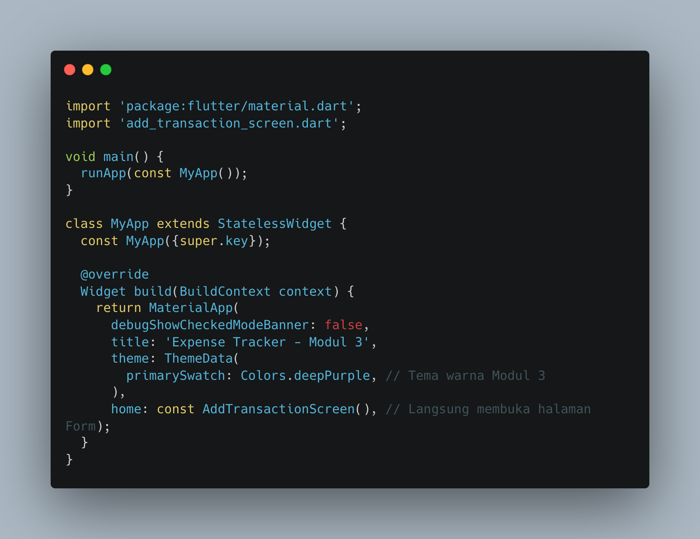
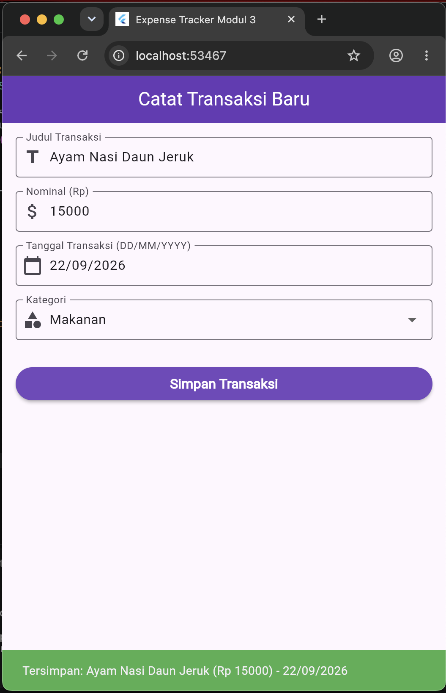

Modul 3: Input Widgets & Forms (Menangkap Data, Dropdown, dan Validasi)
Dalam pengembangan aplikasi mobile interaktif, kemampuan untuk menerima, memproses, dan memvalidasi masukan data dari pengguna merupakan aspek fundamental. Modul ketiga ini mempelajari pemanfaatan pilar formulir Flutter yang terdiri dari penggunaan wadah Form beserta kunci global GlobalKey untuk mengelola validasi elemen masukan secara kolektif.
Penggunaan komponen seperti TextFormField, pengontrol teks TextEditingController, serta elemen pilihan DropdownButtonFormField memungkinkan pengembang membangun antarmuka pencatatan data yang terstruktur. Selain itu, penerapan fungsi validator secara spesifik berfungsi untuk mencegah masuknya data kosong maupun format yang tidak sesuai sebelum data tersebut diproses lebih lanjut oleh sistem.
Berikut adalah langkah-langkah implementasi kode program:
Halaman formulir didefinisikan menggunakan StatefulWidget bernama AddTransactionScreen karena status isi formulir, nilai dropdown, serta teks input akan terus berubah seiring interaksi pengguna. Tahap ini mencakup inisialisasi GlobalKey<FormState> untuk mengontrol form, pembuatan TextEditingController untuk judul dan nominal, serta penyiapan data awal kategori pilihan. Metode dispose() juga diterapkan untuk membersihkan controller saat halaman ditutup guna mencegah kebocoran memori (memory leak).

Snippet 1. Inisialisasi State, GlobalKey, dan Controller Form
Seluruh elemen masukan dibungkus di dalam widget Form yang dihubungkan dengan kunci global. Komponen TextFormField pertama digunakan untuk judul transaksi dengan pemeriksaan validator kondisi kosong. Komponen kedua digunakan untuk nominal saldo dengan pengaturan tipe kibor angka (TextInputType.number) serta pemeriksaan validasi ganda untuk memastikan data terisi dan berupa angka bulat valid melalui fungsi int.tryParse().

Snippet 2. Implementasi TextFormField dan Logika Validasi
Pemilihan kategori transaksi disediakan menggunakan widget DropdownButtonFormField<String> yang memetakan daftar pilihan kategori secara dinamis. Tombol aksi ElevatedButton diletakkan di bagian bawah untuk memicu fungsi _formKey.currentState!.validate(). Jika seluruh data lolos validasi, sistem akan menampilkan pop-up notifikasi berupa SnackBar bertuliskan ringkasan data transaksi yang berhasil disimpan.

Snippet 3. Dropdown Kategori dan Tombol Eksekusi Validasi
File utama main.dart dikonfigurasi untuk menjalankan fungsi runApp() yang memuat kelas MyApp. Berdasarkan struktur modul, tema aplikasi disesuaikan menggunakan warna dasar deepPurple dan langsung menetapkan kelas AddTransactionScreen sebagai halaman utama (home) yang ditampilkan saat aplikasi dijalankan.

Snippet 4. Konfigurasi File Utama main.dart
Berikut adalah hasil tampilan antarmuka form pencatatan transaksi baru beserta fitur validasi input dan komponen dropdown kategori yang telah diuji pada emulator:

Gambar 1. Hasil Tampilan Antarmuka Modul 3
Praktikum modul ketiga berhasil diselesaikan dengan baik. Penggunaan komponen Form, TextFormField, DropdownButtonFormField, serta pemanfaatan GlobalKey terbukti efektif dalam menangkap serta memvalidasi data masukan pengguna secara aman sebelum diproses lebih lanjut oleh aplikasi.